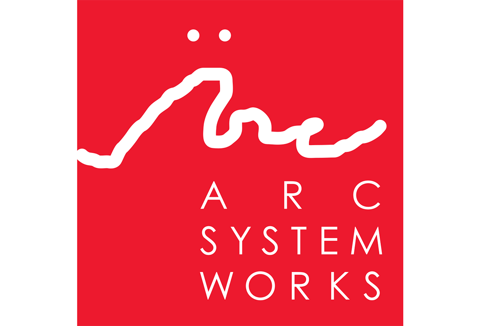

20 de Mayo de 2018, 5:32 PM
Arc System Works, creadores del reciente Dragon Ball FighterZ y títulos de la talla de Guilty Gear Xrd o la saga BlazBlue, podría estar pensando ya en qué nuevo anime adaptar al mundo del videojuego. La propuesta de los fans es crear un título al estilo de FighterZ: con mecánicas de lucha en 2.5D.
Desde el portal EventHubs publicaron una encuesta preguntando a los fans qué saga de anime les gustaría ver convertido en título de lucha por Arc System Works.
Según los resultados obtenidos hasta el momento, JoJo's Bizarre Adventure lidera la lista con más de 2648 votos (aunque ya cuenta con un juego de lucha en 2D producido por Capcom). Bleach se sitúa con más de 1859 votos en segundo puesto, seguido por My Hero Academia (1219 votos), HunterxHunter (898 votos) y One Piece (705 votos).
De momento, Arc System Works ha tomado nota de los resultados de la encuesta, pero tendremos que esperar a que la compañía realice un anuncio sobre su próximo proyecto.
A continuación podéis echarle un vistazo a un gameplay del genial Dragon Ball FighterZ para tener una idea del trabajo de esta desarrolladora.